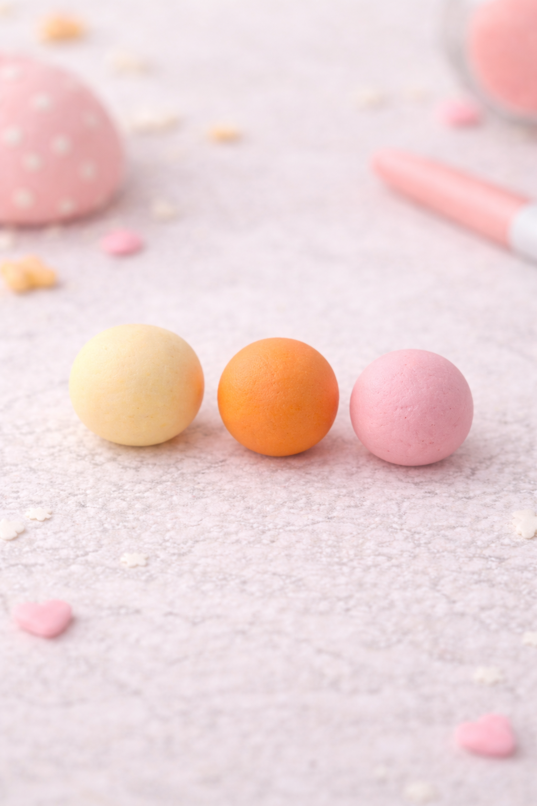

Clay Chick Tutorial
Follow these 3 simple steps to make a cute clay chick.
Step 1 – Create the base shapes

Start by preparing the main colors of clay. You will need a soft pastel yellow for the body, a bright orange for details like the beak and feet, and a light pink for decoration.
Roll the clay between your hands until you get three smooth, round balls. Make sure there are no cracks, because a smooth surface will make your final chick look much cleaner.
The yellow ball will become the main body, so make it slightly larger than the orange and pink ones.
Step 2 – Shape and assemble the chick

Take the yellow clay and roll it into a smooth round body. This will be the main shape of your chick.
Add two small flat wing shapes to the sides. Then place two tiny orange pieces at the bottom for the feet and a small orange oval in the center for the beak.
For the face, place two small black eyes and add soft pink blush circles under them. Finish the design by placing a small pink bow on top of the head.
Step 3 – Refine and finish the details

Now refine all the small details. Press each part gently so everything is attached securely. Smooth out any seams with your fingers or a small clay tool.
Check that the eyes are even, the beak is centered, and the feet are balanced so the chick sits nicely. Small corrections at this stage make a big difference in the final look.
Take your time with this last step. Careful finishing is what makes the chick look polished, cute, and complete.